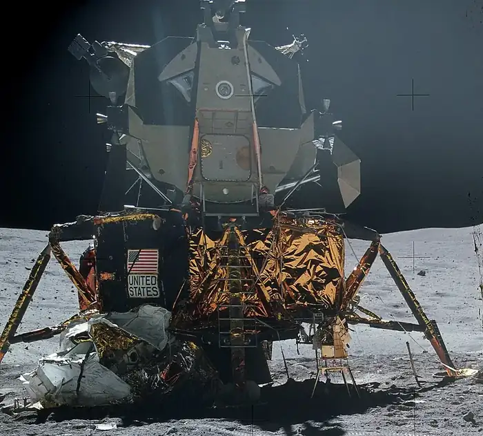
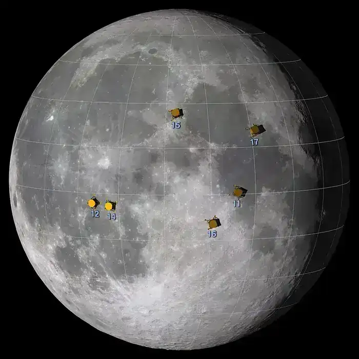

The claim
From 2016, videos circulated showing a dark band or ripple passing across the Moon's disc when filmed at high magnification. The claim was that the Moon is a hologram or a projection, and that the wave is a refresh artefact.
Maps, diagrams and images




The explanation
The artefact is atmospheric. At high magnification, the Moon is seen through a column of turbulent air, and the image distorts — the same effect that makes stars twinkle and distant roads shimmer. When a bright, high-contrast edge moves across the field, the distortion appears as a travelling band.
The pattern is consistent with that: the wave moves at a rate set by the atmosphere and the camera's exposure, it appears at high magnification and low elevation (more air), and it disappears on nights of good seeing. No observatory has recorded anything similar with adaptive optics or from orbit.
Documented: the videos exist, and show a real distortion in the recorded image.
Documented: atmospheric turbulence produces exactly this class of artefact.
Documented: the effect depends on magnification, elevation and seeing.
Not established: any anomaly in the Moon itself, or any projection.
The test that settles it: the same phenomenon appears on planets, on the Sun (with a filter) and on any bright object at high magnification.
Why it is in the archive
Because it is the archive's cleanest imaging artefact: the claim is not about a hidden object but about the instrument, and the instrument explains itself.
Open resources on this topic
- PapersOpen-access articles: DOAJ · PubMed Central · Internet Archive Scholar
- BooksPublic-domain and borrowable copies: Open Library · Project Gutenberg · Google Books · Internet Archive
More images
Cite this page
Momin, S. (2026). The Lunar Wave. The Larger World Archive. https://drsamonline.github.io/LARGE_GLOBE/lunar-wave.htmlMomin, Sohil. “The Lunar Wave.” The Larger World Archive, 2026, https://drsamonline.github.io/LARGE_GLOBE/lunar-wave.html.Momin, Sohil. “The Lunar Wave.” The Larger World Archive, 2026. https://drsamonline.github.io/LARGE_GLOBE/lunar-wave.html.@misc{the2026lunar,
author = {Momin, Sohil},
title = {The Lunar Wave},
year = {2026},
howpublished = {The Larger World Archive},
url = {https://drsamonline.github.io/LARGE_GLOBE/lunar-wave.html},
note = {Last reviewed 20 November 2026}
}Last reviewed 20 November 2026 · Corrections policy · this page is not peer reviewed
Sources for this page
- Wikipedia, “Astronomical seeing” — the turbulence that causes iten.wikipedia.org
- Wikipedia, “Moon” — the object being filmeden.wikipedia.org
- Wikipedia, “Adaptive optics” — the technique that removes the artefacten.wikipedia.org
- Wikipedia, “Mirage” — the family of atmospheric distortionsen.wikipedia.org